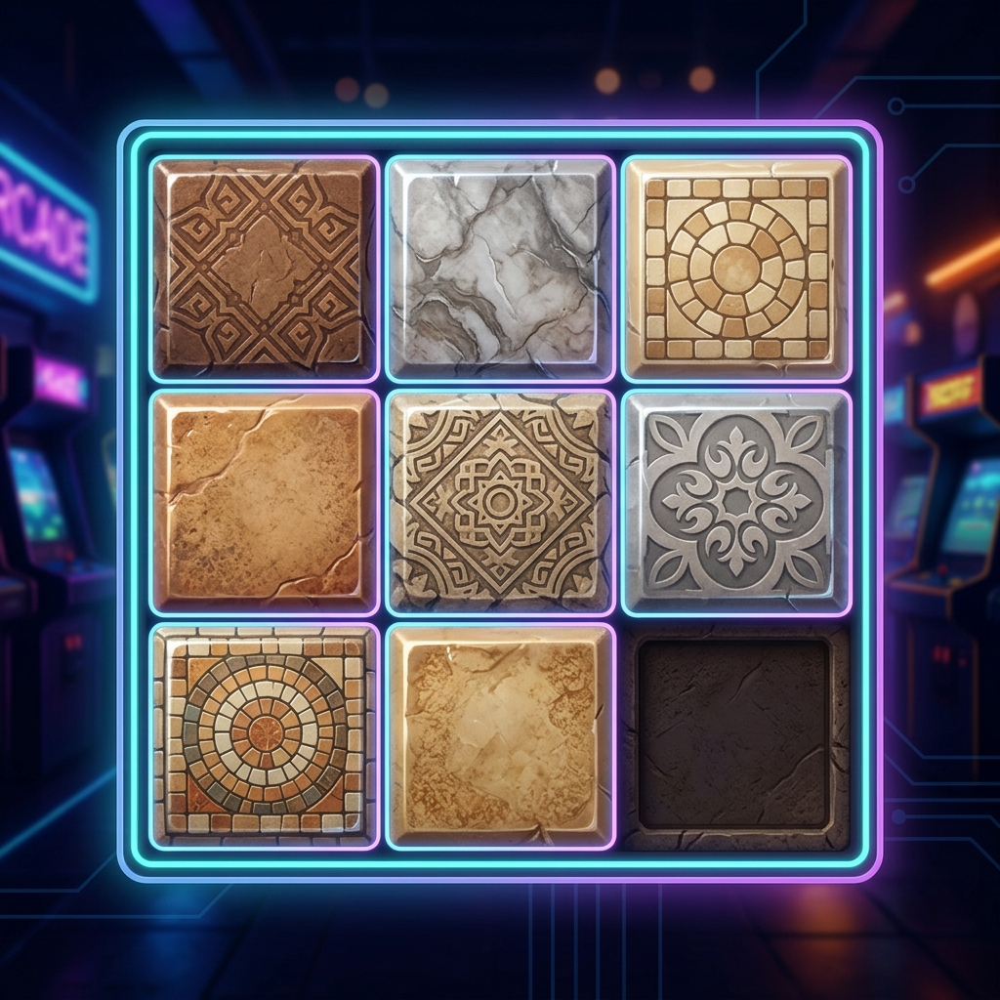

EXEC: LIGHTSOUT.EXE●
ライツアウト
すべてのライトを消せ。
タイルをクリックすると周囲のライトが連動して切り替わる論理パズル。
Archive of the Silent Observer
暗闇の中に浮かび上がる「音のガラス標本」の収蔵庫。
[SYSTEM]: Unidentified binary files detected in Sector-07.
観測データ検索中、記憶の歪みから発掘された未知のプログラム。動作保証なし。
すべてのライトを消せ。
タイルをクリックすると周囲のライトが連動して切り替わる論理パズル。

数字を正しい順番に並べろ。
タイルをスライドさせてパズルを完成させるスライドパズル。
スピードが命の精密射撃。
次々と現れるターゲットを素早く撃ち抜くタイムアタック・シューティング。